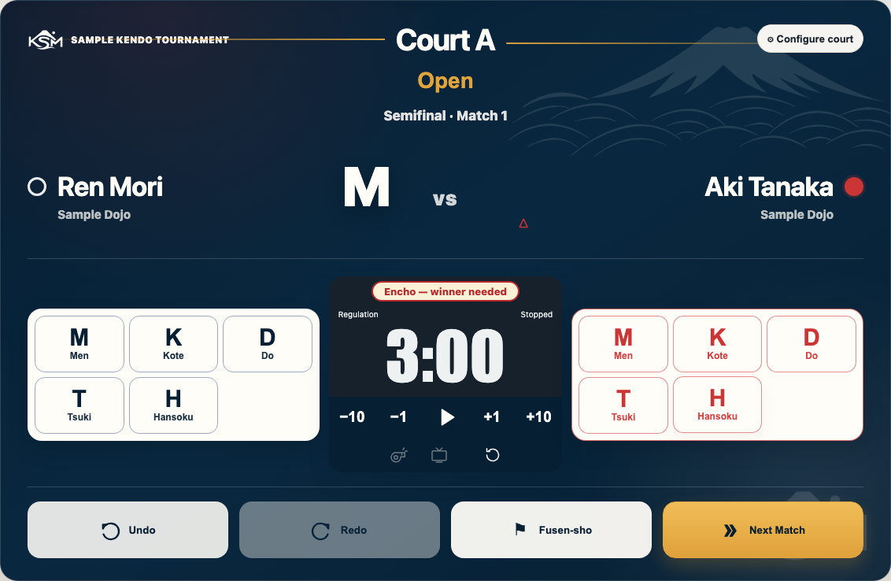
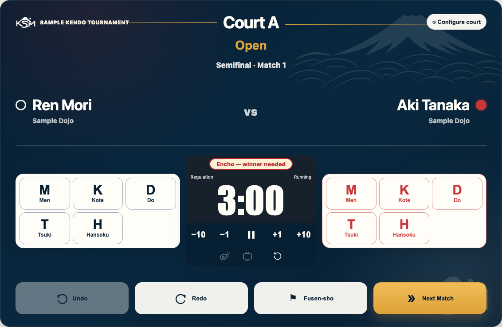

Front · Running a match. Follow the referee’s calls.
1 · Open your court
Open the court link or scan its QR code. Use Staff Login. Check the court letter, division and both names before scoring.
2 · Record points and penalties
Use Men, Kote, Do or Tsuki for the correct red or white player. Check names and colours; their sides may be reversed. Press Hansoku for the player given a penalty. Two penalties give the opponent a point.
Wrong tap? Press Undo. Press Redo to restore an undone action.
A point recorded for white.

Check which player has the penalty.
3 · Run the clock
Use the play button (Start · Hajime) and pause button (Stop · Yame). Adjust seconds with −10, −1, +1, +10. A point or Hansoku stops the clock automatically. Restart only on the referee’s call.
At time up, the whistle sounds. The whistle button (Replay time-up whistle) plays it again. If no clock is shown, ask the director about the timer setting.

The running clock.Encho: first point wins.
4 · Time up and the next match
If tied and a winner is needed, press Encho (Start encho) on the referee’s call. First point wins. If Hikiwake is allowed, a tie can stand. Use Show Encho on TV or Show Hikiwake on TV for the banner when the TV is connected and the clock is stopped.
For a no-show win (fusen-sho), press Fusen-sho and choose the side that won (the one who advances). When the referee confirms the result, press Next Match. Check the new names.
When something looks wrong
Back · Keep this sheet at the court table.
Check the save message
Saving… / Synchronizing…
Normal. Wait a moment while changes are sent.
✓ Saved …
Your changes reached the cloud. They are safe. The message shows “just now”, minutes ago or a time.
Not saved · Changes waiting
Not sent yet. Keep this browser open. Check the connection; call the director if it continues.
Save needs attention
A save needs help. Check the connection and call the director if it continues.
Offline is the separate connection badge. Work stays on this tablet and is sent when the connection returns.
With unsaved changes or Offline, do not clear browser data or switch to a private window. Keep using this tablet.
Sending changesSaved to the cloudUnsaved changesOffline badge beside the save message
Refreshed by accident?
Refreshing is safe. Your work and sign-in stay on this tablet. For Cloud load failed, press Retry. Call the director if it still fails.
Wrong point or penalty?
Press Undo. Check the score with the referee. Redo restores an action undone by mistake.
Wrong result after Next Match?
Stop and call the director. Do not re-score the match or keep advancing.
Wrong division or court? Frozen tablet? Low battery?
Pause and call the director. Check the court and division before scoring again. Ask for help with a frozen tablet or a charger. Do not clear browser data, switch devices or reset the tournament.